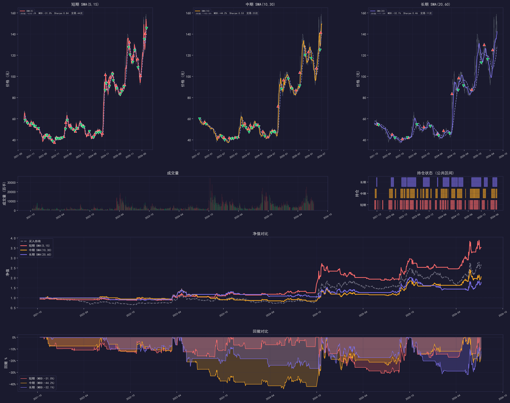
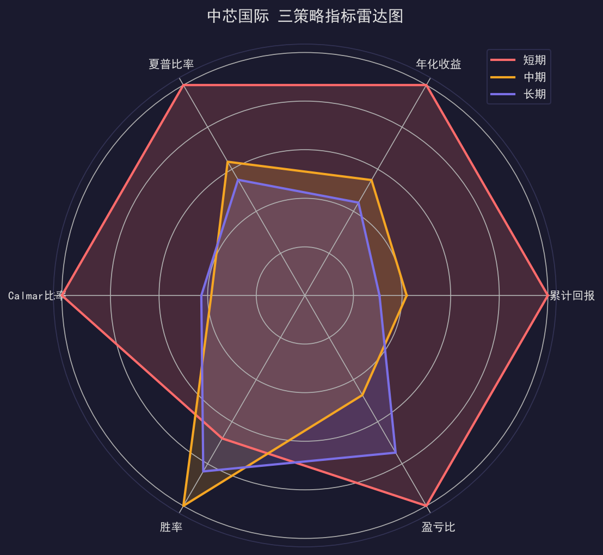

📈 双均线交叉策略
Simple Moving Average Crossover — 金叉买入 / 死叉卖出
📋 策略原理
金叉买入信号
当短期均线上穿长期均线时，表明近期价格走势强于长期趋势，视为买入信号。
SMA(短) ↑ 穿过 SMA(长) → 买入
死叉卖出信号
当短期均线下穿长期均线时，表明近期价格走势弱于长期趋势，视为卖出信号。
SMA(短) ↓ 穿过 SMA(长) → 卖出
三套周期参数
短/中/长三套参数组合，适应不同趋势周期的捕捉需求。
短期 SMA(5,15)
中期 SMA(10,30)
长期 SMA(20,60)
中期 SMA(10,30)
长期 SMA(20,60)
交易成本模型
买入 0.08%（佣金+过户费），卖出 0.13%（佣金+印花税+过户费），T+1 开盘价执行。
初始资金 ¥100,000
回测区间 2021-07 ~ 2026-07
回测区间 2021-07 ~ 2026-07
📊 回测指标对比
中国银行 601988.SH
中芯国际 688981.SH
🏦 中国银行 (601988.SH)
| 指标 | 短期 SMA(5,15) | 中期 SMA(10,30) | 长期 SMA(20,60) | 买入持有 |
|---|---|---|---|---|
| 累计回报 | +123.61% | +115.16% | +61.93% | +145.94% |
| 年化收益 | 17.84% | 17.15% | 10.76% | 20.15% |
| 超额收益 | -22.33% | -30.78% | -84.01% | — |
| 最大回撤 | -11.28% | -14.72% | -21.53% | — |
| 夏普比率 | 1.07 | 0.98 | 0.58 | — |
| Calmar比率 | 1.58 | 1.17 | 0.50 | — |
| 胜率 | 48.00% | 47.83% | 38.46% | — |
| 盈亏比 | 2.04 | 4.33 | 6.07 | — |
| 交易次数 | 50 | 23 | 13 | — |
| 平均持仓(天) | 21.3 | 50.3 | 92.2 | — |
🔧 中芯国际 (688981.SH)
| 指标 | 短期 SMA(5,15) | 中期 SMA(10,30) | 长期 SMA(20,60) | 买入持有 |
|---|---|---|---|---|
| 累计回报 | +252.49% | +105.80% | +77.55% | +167.26% |
| 年化收益 | 29.48% | 16.17% | 13.01% | 22.33% |
| 超额收益 | +85.23% | -61.47% | -89.71% | — |
| 最大回撤 | -31.03% | -44.19% | -32.15% | — |
| 夏普比率 | 0.84 | 0.53 | 0.46 | — |
| Calmar比率 | 0.95 | 0.37 | 0.40 | — |
| 胜率 | 29.55% | 43.48% | 36.36% | — |
| 盈亏比 | 4.31 | 2.04 | 3.22 | — |
| 交易次数 | 44 | 23 | 11 | — |
| 平均持仓(天) | 17.8 | 33.8 | 69.6 | — |
📉 收益对比图
累计回报对比 (%)
夏普比率 & Calmar比率 对比
🖼️ 策略可视化图表
中国银行
中芯国际

中国银行 — 双均线策略综合图表（股价+均线+信号+净值+回撤）

中国银行 — 三策略指标雷达图

中芯国际 — 双均线策略综合图表（股价+均线+信号+净值+回撤）

中芯国际 — 三策略指标雷达图
💡 策略总结
核心发现
- 短期 SMA(5,15) 在两只标的上均表现最优，中芯国际超额收益 +85.23%
- 高波动的中芯国际更适合双均线策略，银行股趋势平缓，策略优势不明显
- 长期 SMA(20,60) 信号过少，容易在震荡中产生较大回撤
- 盈亏比随周期拉长而提升（2.04 → 6.07），但胜率和绝对收益下降